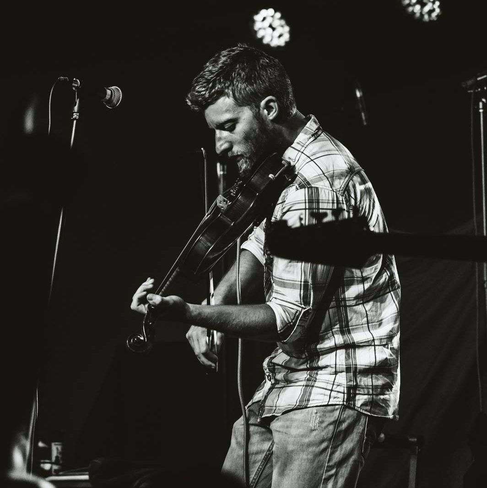

My journey from where I started to where I am now has been anything but conventional. As a young kid, I was always drawn to music. I knew it was something I wanted to pursue the first time I learned a tune on the fiddle. After several music lessons, fiddle contests, and countless jam sessions, I decided to pursue music professionally. I played any gig I could get — sometimes in front of only 20 people, which eventually grew into hundreds. Eventually, I landed a full-time job in Branson, MO, as a violinist and fiddle player. It was an incredible opportunity, but after a year, I realized I was burnt out and needed a change.
I decided to change careers, and it has been a challenging but rewarding learning experience. I started taking IT classes, exploring different paths, and discovered web development felt like a perfect fit. Right now, I am broadening my skills in WordPress, HTML, CSS, Python, and JavaScript, always eager to learn new tools and techniques. Web development has clicked for me because, at heart, I’ve always been an artist, and now I can channel my creativity into building functional, beautiful websites.
As I reflect on my journey, I am excited for the future and the opportunities that lie ahead. Each project and skill I learn brings me closer to becoming my best self. I approach every challenge one step at a time, knowing that persistence and curiosity are the keys to growth. I’m eager to continue this journey, explore new ideas, and create meaningful experiences for the people who interact with the websites I build.